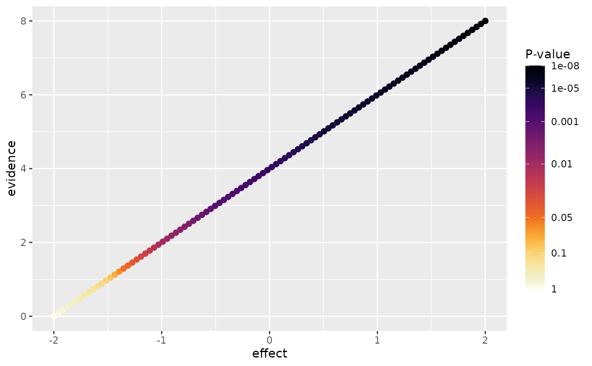

Maps raw p-values to either the Inferno or Viridis color palette using a
threshold-aware transformation. The transformation allocates additional
visual resolution around commonly interpreted p-value thresholds of 0.05,
0.01, and 0.001. Values above 0.05 are progressively desaturated to reduce
their visual emphasis while retaining a continuous representation of the
underlying p-values. The colorbar uses the same warped coordinates, so its
raw p-value labels remain separated around these thresholds. Use this scale
when p-values are mapped to the color aesthetic.
Arguments
- palette
A character value specifying the color palette. Must be
"inferno"or"viridis". Defaults to"inferno".- direction
A numeric value controlling the direction of the palette. Use
-1, the default, for darker colors to indicate smaller p-values and stronger statistical evidence. Use1to reverse the palette.- name
The legend title. Defaults to
"P-value".- breaks
A numeric vector of raw p-values to display as legend breaks. Defaults to commonly interpreted statistical thresholds and reference values.
- labels
A function or character vector used to label the legend breaks. By default, the legend displays raw p-values rather than transformed values.
- limits
A numeric vector containing the minimum and maximum p-values represented by the scale. Values outside these limits are squished to the nearest limit. Defaults to
c(1e-8, 1).- na.value
The color assigned to missing p-values. Defaults to
"grey80".- guide
A guide function or guide name. The default,
NULL, uses a taller colorbar so the threshold-aware breaks remain legible. Supply"colourbar"for ggplot2's standard-sized colorbar or another guide to override this behavior.- ...
Additional arguments passed to
ggplot2::continuous_scale().
Examples
example_data <- data.frame(
effect = seq(-2, 2, length.out = 100),
evidence = seq(0, 8, length.out = 100)
)
example_data$p_value <- 10^(-example_data$evidence)
ggplot2::ggplot(
example_data,
ggplot2::aes(
x = effect,
y = evidence,
color = p_value
)
) +
ggplot2::geom_point(size = 2) +
scale_color_pvalue()
